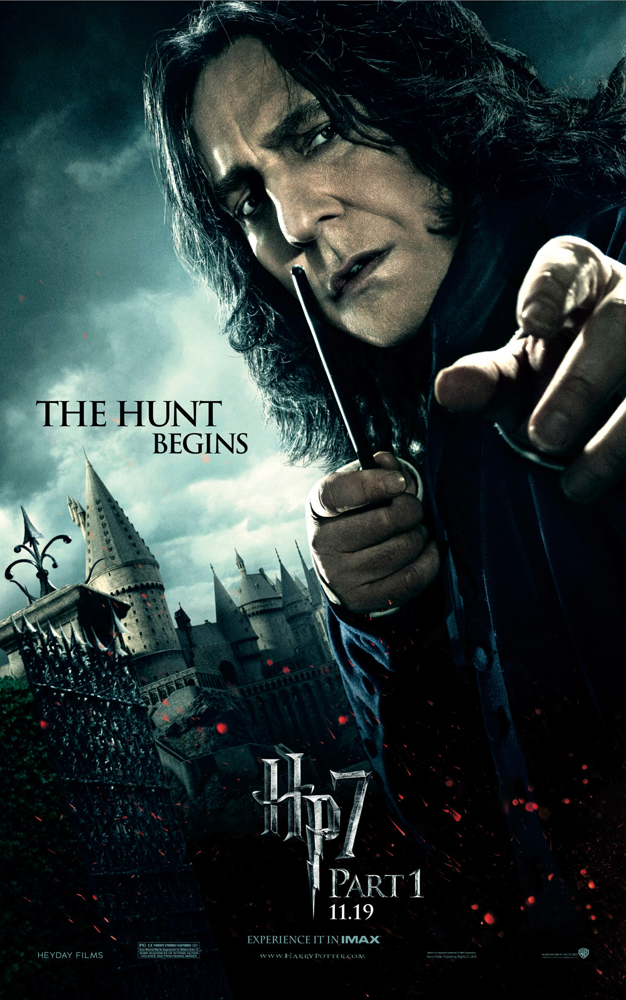
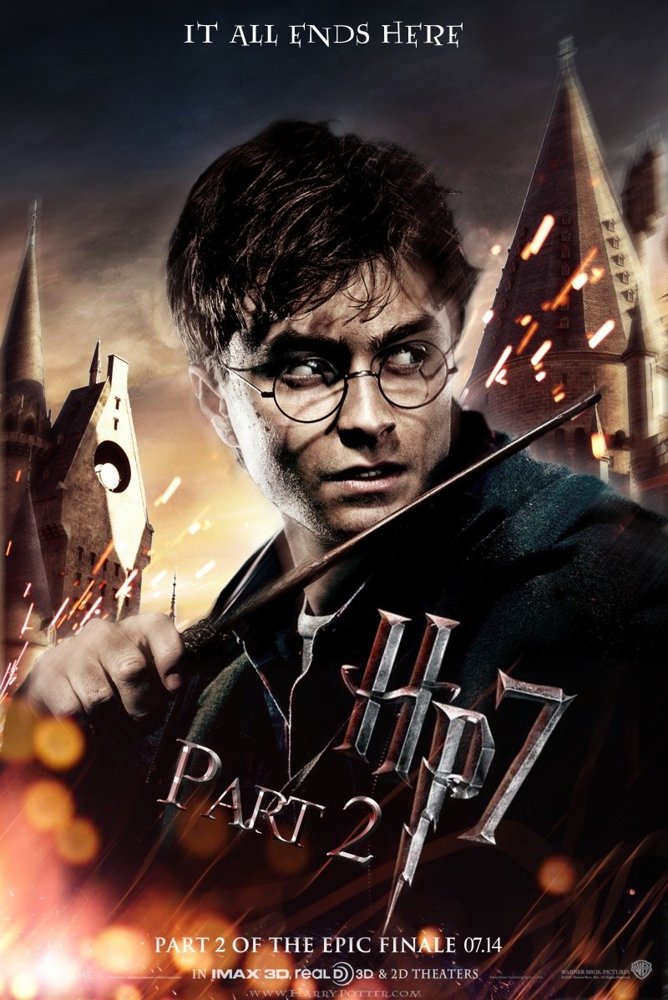

As casas de Hogwarts são um dos elementos centrais na série Harry Potter. Elas representam as
quatro
principais divisões dentro da escola de magia de Hogwarts, cada uma com características distintas, e
cada aluno é alocado a uma casa de acordo com suas qualidades e valores. Cada casa tem seu próprio salão
comunal, sua sala de refeições e sua tradição. Vamos explorar cada uma delas:
1. Grifinória (Gryffindor)
Fundador: Godric Gryffindor
Cores: Vermelho e dourado
Animal: Leão
Elemento: Fogo
Personalidade: Coragem, bravura, ousadia, espírito de luta e lealdade.
Grifinória é a casa mais associada à coragem e à disposição para fazer o que é certo, mesmo diante do
perigo.
A casa é famosa por seus alunos que se destacam em momentos de grande heroísmo. O fundador, Godric
Gryffindor, acreditava que os bruxos que possuíssem coragem e bravura deveriam ser os líderes da magia.
Alunos notáveis: Harry Potter, Hermione Granger, Ron Weasley, Albus Dumbledore, Minerva McGonagall,
Sirius
Black e James Potter.
2. Sonserina (Slytherin)
Fundador: Salazar Slytherin
Cores: Verde e prata
Animal: Serpente
Elemento: Água
Personalidade: Ambição, astúcia, liderança, engenhosidade e pureza de sangue.
Sonserina é a casa dos bruxos que valorizam a ambição e a busca pelo poder. O fundador, Salazar
Slytherin,
acreditava que apenas bruxos de "sangue puro" deveriam ter o direito de estudar magia em Hogwarts. Os
alunos
de Sonserina são conhecidos por sua astúcia, habilidade em fazer aliados e por sua determinação em
alcançar
seus objetivos.
Alunos notáveis: Severus Snape, Tom Riddle (Voldemort), Draco Malfoy, Bellatrix Lestrange, Horace
Slughorn.
3. Lufa-Lufa (Hufflepuff)
Fundador: Helga Hufflepuff
Cores: Amarelo e preto
Animal: Tejo
Elemento: Terra
Personalidade: Lealdade, justiça, paciência, trabalho duro, amizade e humildade.
Lufa-Lufa é a casa que valoriza o trabalho árduo, a lealdade e a amizade. Helga Hufflepuff
acreditava que
todos os bruxos deveriam ter uma chance de aprender magia, independentemente de sua origem. A
casa é
conhecida por ser inclusiva, acolhedora e por valorizar a honestidade e o esforço genuíno.
Alunos notáveis: Cedric Diggory, Nymphadora Tonks, Newt Scamander (personagem principal de
Animais
Fantásticos).
4. Corvinal (Ravenclaw)
Fundador: Rowena Ravenclaw
Cores: Azul e prata (ou azul e bronze, dependendo da fonte)
Animal: Águia
Elemento: Ar
Personalidade: Inteligência, sabedoria, criatividade, curiosidade e amor pelo conhecimento.
Corvinal é a casa dos alunos mais intelectuais de Hogwarts. O fundador, Rowena Ravenclaw,
valorizava a
inteligência, a sabedoria e a capacidade de pensar de forma independente. Os membros de
Corvinal são
conhecidos por sua busca constante pelo conhecimento, sendo muitas vezes os mais estudiosos e
criativos da
escola.
Alunos notáveis: Luna Lovegood, Cho Chang, Filius Flitwick, Gilderoy Lockhart.
O Chapéu Seletor (Sorting Hat)
O processo de alocação dos alunos em suas casas é feito pelo Chapéu Seletor, que é mágico e pode ler a
mente
e o coração dos alunos para decidir qual casa mais combina com suas qualidades. No caso de Harry Potter,
o
chapéu quase o coloca em Sonserina, mas ele pede para ser alocado em Grifinória, devido à sua coragem e
lealdade. O Chapéu Seletor também é responsável por relembrar a história de cada casa e, em algumas
situações, pode fazer ajustes na escolha de acordo com o desejo dos próprios alunos.
A Competição das Casas
As casas competem entre si ao longo do ano por pontos, com base no comportamento e nas conquistas dos
alunos. Os pontos podem ser ganhos ou perdidos por ações como realizar boas ações, vencer uma competição
ou
desobedecer regras. No final do ano, a casa com mais pontos ganha a Copa das Casas, o prêmio máximo. A
competição entre as casas, especialmente Grifinória e Sonserina, é uma das características mais
marcantes da
vida escolar em Hogwarts.
Considerações Finais
Cada casa de Hogwarts representa um conjunto de valores que ajudam a moldar a identidade dos alunos e
influenciam suas escolhas e ações ao longo da saga. Embora muitas vezes os personagens se destaquem em suas
casas específicas, a série de Harry Potter também mostra que a verdadeira amizade e coragem transcendem as
divisões entre as casas.
Harry Potter e a Pedra Filosofal (2001)
Harry Potter e a Pedra Filosofal é o primeiro filme da saga Harry Potter, baseado no livro de
J.K. Rowling.
A história segue Harry Potter, um garoto órfão de 11 anos que vive com seus tios e primo, os Dursleys, que o
maltratam. Ao completar 11 anos, Harry descobre que é, na verdade, um bruxo e foi aceito na Escola de Magia
e Bruxaria de Hogwarts.
Em Hogwarts, Harry faz novos amigos, como Ron Weasley e Hermione Granger, e descobre que é famoso no mundo
bruxo por ter sobrevivido a um ataque do bruxo das trevas Lord Voldemort, que matou seus pais quando ele era
um bebê. Durante o primeiro ano, Harry se envolve em uma busca para encontrar a Pedra Filosofal, um objeto
mágico que pode conferir imortalidade. Ele e seus amigos enfrentam desafios e enigmas para chegar até a
pedra, enquanto tentam evitar que Voldemort recupere seu poder.
No final, Harry confronta Voldemort, que ainda tenta retornar ao poder, mas consegue impedi-lo com a ajuda
de seus amigos e da proteção que seus pais lhe deixaram. O filme termina com Harry retornando à casa dos
Dursleys para as férias de verão, já ansioso para o segundo ano em Hogwarts.
Harry Potter e a Câmara Secreta (2002)
O segundo filme da série Harry Potter, intitulado Harry Potter e a Câmara Secreta (2002), segue
Harry
em seu segundo ano na Escola de Magia e Bruxaria de Hogwarts. Logo ao chegar, coisas estranhas começam a
acontecer: alunos e até um fantasma são petrificados, e uma misteriosa mensagem é deixada nas paredes da
escola, mencionando a Câmara Secreta.
De acordo com a lenda, a Câmara foi criada por Salazar Sonserina, um dos fundadores da escola, e contém
um monstro capaz de purificar Hogwarts, expulsando todos os estudantes nascidos trouxas (aqueles cujos pais
não são bruxos). A lenda diz que somente o "herdeiro de Sonserina" pode abrir a Câmara e libertar a
criatura.
Harry, com a ajuda de seus amigos Ron e Hermione, tenta desvendar o mistério por trás dos ataques.
Durante a investigação, ele descobre que a Câmara foi aberta antes, e o monstro que habita seu interior é
uma basilisco, uma serpente gigante. Além disso, ele encontra um diário mágico que pertenceu a um jovem
Tom Riddle, que mais tarde é revelado ser uma versão jovem de Voldemort.
No final, Harry confronta a serpente e, com a ajuda de Fawkes, a fênix de Dumbledore, consegue
derrotá-la e salvar Ginny Weasley, irmã de Ron, que estava sendo controlada por Tom Riddle através do
diário. A história termina com a revelação de que o herdeiro de Sonserina era na verdade um fantasma (Tom
Riddle), e a Câmara Secreta é finalmente fechada novamente.
O filme tem como temas centrais a coragem, a amizade e a luta contra o preconceito, enquanto Harry e seus
amigos continuam a se aventurar em Hogwarts, enfrentando desafios cada vez mais perigosos.
Harry Potter e o Prisioneiro de Azkaban (2004)
"Harry Potter e o Prisioneiro de Azkaban" (2004) é o terceiro filme da série e começa com Harry em uma fuga
de casa, após brigar com os tios. Ele descobre que o prisioneiro fugitivo Sirius Black escapou da prisão de
Azkaban e está atrás dele.
Sirius é um conhecido traidor, acusado de ter entregado os pais de Harry, Lily e James Potter, para
Voldemort. Ao chegar em Hogwarts, Harry encontra novos personagens, como o professor Remus Lupin, que se
torna seu mentor na Defesa Contra as Artes das Trevas, e o hipogrifo Buckbeak, que acaba sendo condenado à
morte.
Ao longo do filme, Harry e seus amigos, Ron e Hermione, tentam descobrir o que realmente aconteceu no
passado. Eles encontram um mapa mágico, o Mapa do Maroto, que revela os movimentos de todos dentro de
Hogwarts, e descobrem que Sirius Black não foi o traidor. A verdadeira pessoa responsável pela morte dos
pais de Harry é Peter Pettigrew, que na verdade está vivo e disfarçado como o rato de Ron, Scabbers.
Com a ajuda de um feitiço de viajar no tempo, Hermione e Harry voltam ao passado para salvar Sirius Black e
o hipogrifo Buckbeak, que estão em perigo de morrer injustamente. No final, embora Sirius consiga escapar de
Azkaban, ele não pode ficar com Harry, pois ainda é procurado.
O filme tem como temas principais amizade, lealdade e a verdade sobre o passado, além de explorar os
mistérios e a complexidade das relações familiares. Também apresenta os Dementadores, criaturas
aterrorizantes que guardam a prisão de Azkaban, e que têm grande impacto na vida de Harry.
Harry Potter e o Cálice de Fogo (2005)
"Harry Potter e o Cálice de Fogo" (2005) é o quarto filme da série e segue Harry durante seu quarto
ano em
Hogwarts. O filme começa com Harry e seus amigos, Ron e Hermione, indo para o Mundo Mágico para assistir à
Copa Mundial de Quadribol. Após o evento, a marca das trevas de Voldemort aparece no céu, sinalizando seu
retorno iminente.
Quando Harry retorna a Hogwarts, o Torneio Tribruxo é anunciado, um evento mágico que reúne três escolas:
Hogwarts, Beauxbatons e Durmstrang. Cada escola escolhe um campeão para competir em três tarefas perigosas.
Embora Harry seja muito jovem (tem 14 anos), o Cálice de Fogo, um objeto mágico, inexplicavelmente o escolhe
como um dos campeões, o que gera muita desconfiança.
As Três Tarefas:
Primeira Tarefa: Enfrentar um dragão para conseguir um ovo dourado. Harry usa sua vassoura mágica, a
Firebolt, para derrotar o dragão e pegar o ovo.
Segunda Tarefa: Os campeões devem resgatar algo importante no fundo do lago de Hogwarts, onde estão mantidos
prisioneiros. Harry resgata Ginny Weasley, a irmã de Ron, e termina em segundo lugar.
Terceira Tarefa: Os campeões devem atravessar um labirinto mágico cheio de criaturas e obstáculos. Harry e
Cedric Diggory, outro campeão de Hogwarts, chegam ao centro do labirinto ao mesmo tempo e decidem pegar o
Cálice de Fogo juntos.
Harry Potter e a ordem da Fênix (2007)
"Harry Potter e a Ordem da Fênix" (2007) é um filme que mostra a luta crescente de Harry contra Voldemort e
o desprezo que ele recebe da sociedade bruxa, que se recusa a acreditar no retorno do vilão. Ao começar o
quinto ano em Hogwarts, Harry se vê isolado e incompreendido, especialmente após o Ministério da Magia
desacreditar suas afirmações sobre Voldemort e espalhar rumores de que ele e Alvo Dumbledore estão tentando
criar pânico. Isso causa um distanciamento ainda maior entre Harry e o resto do mundo bruxo, inclusive com
Ron e Hermione tentando apoiá-lo.
Com a pressão crescente, Harry forma a Armada de Dumbledore (D.A.), onde ensina aos estudantes como se
defender contra as artes das trevas. A resistência é crucial para os alunos, pois a nova diretora de
Hogwarts, Professora Umbridge, impõe uma ditadura, com regras abusivas e cruéis. Ela se torna uma figura
odiada, simbolizando o controle autoritário do Ministério da Magia.
Enquanto isso, Harry começa a ter visões de Voldemort, o que o leva a um perigo crescente. Ele descobre que
a conexão entre ele e o Lorde das Trevas é mais forte do que imaginava e que Voldemort está buscando a
profecia que envolve os dois. Ela revela que, de alguma forma, Harry e Voldemort estão ligados e que só um
deles pode sobreviver, o que coloca Harry diante de um destino inevitável.
O clímax do filme acontece quando Harry e seus amigos, incluindo Ron, Hermione e Ginny, vão até o Ministério
da Magia para tentar recuperar a profecia antes que os Comensais da Morte a tomem. Uma batalha épica
acontece na Câmara de Mistérios, onde Sirius Black é tragicamente morto por Bellatrix Lestrange. A perda de
Sirius deixa Harry arrasado, mas também o faz perceber a seriedade da guerra que está por vir.
Harry Potter e o Enigma do Príncipe (2009)
O sexto filme da saga, baseado no sexto livro de J.K. Rowling, acompanha Harry Potter em seu
sexto ano em
Hogwarts, onde ele começa a aprender mais sobre o passado de Lord Voldemort. O professor Horace Slughorn
retorna à escola como professor de Poções e convida Harry a ser seu aluno, onde o jovem bruxo se destaca com
a ajuda de um livro de Poções usado que pertenceu a um misterioso "Príncipe Mestizo". Durante o ano letivo,
Harry se aproxima de seus amigos, especialmente de Ron e Hermione, enquanto começa a se envolver mais com
Ginny Weasley.
Dumbledore, com a ajuda de Harry, tenta descobrir segredos cruciais sobre Voldemort e suas Horcruxes,
objetos nos quais ele esconde fragmentos de sua alma para garantir a imortalidade. Harry e Dumbledore
visitam uma caverna, onde encontram um Horcrux, mas são atacados por inferi e quase morrem.
No final, Draco Malfoy, pressionado por Voldemort, tenta assassinar Dumbledore, mas é impedido por Snape,
que, com sua lealdade a Voldemort, acaba matando Dumbledore em uma cena devastadora na Torre de Astronomia.
Harry, apesar de tentar capturá-lo, não consegue deter Snape, que revela ser o "Príncipe Mestizo". O filme
termina com a sensação de grande perda e a ameaça iminente de Voldemort.
O filme explora temas de lealdade, sacrifício e os desafios do crescimento em tempos de guerra.
Harry Potter
e as Relíquias da Morte parte I (2010)
Harry Potter e as Relíquias da Morte – Parte 1 (2010) é o penúltimo filme da saga Harry Potter e
segue
diretamente os eventos de Harry Potter e o Enigma do Príncipe. No filme, Harry, Ron e Hermione estão em uma
missão para encontrar e destruir as Horcruxes de Voldemort, que são fragmentos da alma do vilão espalhados
por objetos mágicos, essenciais para sua imortalidade. Enquanto isso, Voldemort assume o controle do
Ministério da Magia e a guerra contra os bruxos das trevas se intensifica.
Resumo do filme:
A Grande Perseguição: O filme começa com a crescente ameaça de Voldemort, que agora controla o Ministério da
Magia. Harry é resgatado de sua casa pelos amigos, junto com vários bruxos, e eles fugem em um momento de
grande perigo. A perseguição é intensa, e eles passam a viver como fugitivos, com o Ministério e os
Comensais da Morte atrás deles.
A Busca pelas Horcruxes: Harry, Ron e Hermione começam sua missão de encontrar as Horcruxes, objetos onde
Voldemort escondeu pedaços de sua alma. Eles enfrentam vários obstáculos, incluindo um ataque ao esconderijo
da família de Bill e Fleur, onde Hermione utiliza um feitiço de desilusão para se esconder e proteger seus
amigos.
As Relíquias da Morte: Durante a fuga, Harry também descobre a lenda das Relíquias da Morte, três objetos
mágicos poderosos (a Varinha das Varinhas, a Pedra da Ressurreição e a Capa da Invisibilidade) que, segundo
a lenda, tornariam seu possuidor o "Mestre da Morte". Harry já possui a Capa da Invisibilidade, mas a
importância das Relíquias será revelada mais tarde.
A Luta contra os Comensais da Morte: Em uma das cenas mais dramáticas, Hermione e Harry são capturados pelos
Comensais da Morte e levados para a mansão Malfoy. Lá, eles encontram outros prisioneiros e têm que se
libertar em uma luta desesperada. Eles conseguem escapar com a ajuda de Dobby, a pequena elfa doméstica, que
os resgata de maneira heroica, mas morre durante a fuga.
O Sacrifício de Dobby: Dobby morre ao salvar os amigos, o que se torna um momento emocionalmente carregado
no filme. Ele é enterrado com dignidade por Harry, Ron e Hermione, que continuam sua jornada.

Harry Potter e as Relíquias da Morte parte II (2011)
Harry Potter e as Relíquias da Morte :
Harry Potter e as Relíquias da Morte – Parte 2 (2011) encerra a saga de Harry Potter com a Batalha de
Hogwarts, onde Harry, Ron, Hermione e outros bruxos se preparam para o confronto final contra Voldemort e
seus seguidores, os Comensais da Morte.
Principais eventos:
- A busca pela última Horcrux: Harry e seus amigos descobrem que a última Horcrux de Voldemort está em
Hogwarts. Ao tentar destruí-la, eles enfrentam vários perigos, incluindo a ajuda dos fantasmas e aliados da
escola.
- O sacrifício de Harry: Harry descobre que, quando Voldemort tentou matá-lo ainda bebê, ele se tornou
acidentalmente uma Horcrux. Para destruir a parte da alma de Voldemort dentro dele, Harry se entrega ao
vilão, sabendo que morrerá. Contudo, Harry sobrevive a isso devido à proteção que o amor de sua mãe lhe
conferiu.
- A Batalha de Hogwarts: Enquanto Voldemort e seus seguidores atacam a escola, a batalha se intensifica.
Muitos personagens queridos morrem, incluindo Fred Weasley, Remus Lupin e Nymphadora Tonks.
Harry, Ron e Hermione continuam sua busca pela vitória enquanto lutam pela sobrevivência.
- A destruição final de Voldemort: Durante a batalha, Harry descobre que a Varinha das Varinhas (uma
das Relíquias da Morte) não obedece a Voldemort, mas sim a ele, porque Harry derrotou seu verdadeiro mestre,
Draco Malfoy. Isso enfraquece Voldemort, e, ao tentar matar Harry com a varinha, o feitiço reboteia e
Voldemort é destruído, finalmente derrotado.
- O epílogo: 19 anos depois, vemos Harry, Ginny, Ron e Hermione como adultos, casados e com filhos. Eles
estão na estação de trem, vendo seus filhos partirem para Hogwarts, enquanto o mundo bruxo vive em paz.
Conclusão: O filme traz um fechamento grandioso e emocional à saga, destacando temas como sacrifício,
coragem, lealdade e o poder do amor. A vitória final de Harry não é apenas sobre a magia ou o poder de
Voldemort, mas sobre a escolha de fazer o bem, mesmo diante da morte.
